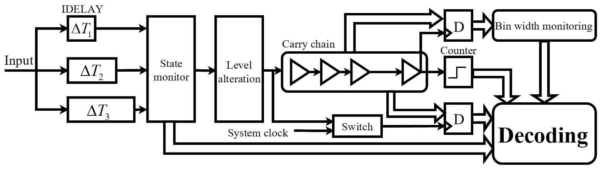

<div id="body">
    <div id="body_border">
    <div id="body_border1">
    <div style="border-bottom: 1px solid #D1D1D1;">
    <div style="border-bottom: 1px solid #959595;">
    <div class="header" style="text-align: center;">
    <div class="line4" style="font-family: Arial, Helvetica, sans-serif; text-align: center;"><span style="color: #000000;"><strong><span class="style17"><span style="background-color: #ffffff;"> 　<font size=6>TwinPop: A Resource-efficient and Highly Linear FPGA-based Time-to-Digital Converter</font> </span></span><span style="background-color: #ffffff;">&nbsp;</span></strong></span></div>
    </div>
    </div>
    </div>
    <!--header 结束-->
    <div class="IndexList">
    <div id="selfIntroduction" class="style4">
    <p class="style1"><strong>Project Description:</strong></p>
    <p> Time to Digital Converter (TDC) is a frequently used high-precision time interval measurement unit in various electronic and industrial scenarios. 
        The notorious nonlinearity problems are the leading cause that affect the performance of a TDC. 
        To deal with these issues, conventional approaches often demand excessive redundant resources or tedious calibrations, or alternatively sacrifice conversion rates. To this end, in this paper, we propose TwinPop, a new highly Linear, resource-efficient and temperature-invariant TDC. 
        ToPo utilizes only 1/4 chain resources than conventional Tapped Delay Line (TDL) TDC, without introducing any increased dead time and even being less vulnerable to temperature fluctuations. The key technique of TwinPop is a novel two-phase interpolation structure. 
        In this structure, we utilize few temperature-invariant delay units to imprint timestamps along a single short chain. These delay units, acting like a ring oscillator, switch respective states along the short chain if a predefined time interval is triggered, leaving decodable landmarks. Meanwhile, since only 1/4 chain resources is needed, we can constrain all logic resources within a single logic array block, significantly mitigating the nonlinearity problem, especially the ultra-wide bins.  
        We have implemented our TDC structure in popular FPGA platforms including Intel and Xilinx FPGAs. Results demonstrate that our TDC can readily achieve a less than 0.3~LSB INL even without any calibration tricks. </p>
    <p><strong><span class="style1">Acknowledgement:</span> </strong></p>
    <ul>
    <li>This project is filed on December 2021 and is patented. For more information please visit our <a href="https://github.com/caichao/twinpop">git repository</a>
    <!--<p><strong><span class="style1">Updates &amp; News:</span> </strong></p>
    </li>
    </ul>
    </div>
    <div id="selfIntroduction" class="style4">
    <ul>
    <li><strong>2018/12</strong> The <span class="style18"> <strong>mRehab</strong></span> team wins the finalist award (5 out of 74 teams) in NYS Department of Health Aging Innovation Competitions.</li>
    <li><strong>2018/04</strong> The <span class="style18"> <strong>mRehab </strong></span>product starts the first in-home study in East Amherst, NY.</li>
    <li><strong>2018/03</strong> The <span class="style18"> <strong>mRehab </strong></span>student team wins the 2nd place award in UB Aging Innovation Challenges.</li>
    <li><strong>2018/02</strong> The android app of <span class="style18"> <strong>mRehab</strong></span> will be launched in early March 2018.-->
    <p><strong><span class="style1">People:</span> </strong></p>
    <ul>
    <li>Dr. Chao Cai (Associate Proffessor, College of Life Science &amp; Engineering) - Huazhong University of Science and Technology</li>
    <li>Fei Wang(Ph.D student, College of Life Science &amp; Engineering) - HUST</li>
    <li>Jiawen Zhou (Master student, College of Life Science &amp; Engineering) - HUST</li>
    <li>Ziyi Wong (Master student, College of Life Science &amp; Engineering) - HUST</li>
    </ul>
    <!--<p><strong><span class="style1">Collaborators:</span> </strong></p>
    <p>Dr. Feng Lin, University of Colorado Denver</p> -->
    <p><strong><span class="style1">Related Publications:</span> </strong></p>
    </li>
    </ul>
    </div>
    <div id="selfIntroduction" class="style4">
    <ul>
    <li>[1] Chao Cai. "TwinPop: A Resource-efficient and Highly Linear FPGA-based Time-to-Digital Converter", in IEEE Transactions on Instrumentation and Measurement, 2024 </li>
    </ul>
    </div>
    </div>
    </div>
    </div>
    </div>
    <!--body结束-->
